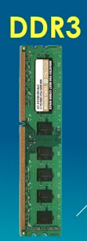

|  |
RAM or Random-Access Memory is a form of computer memory that can be read and changed in any order, typically used to store working data and machine code. A random-access memory device allows data items to be read or written in almost the same amount of time irrespective of the physical location of data inside the memory, in contrast with other direct-access data storage media (such as hard disks, CD-RWs, DVD-RWs and the older magnetic tapes and drum memory), where the time required to read and write data items varies significantly depending on their physical locations on the recording medium, due to mechanical limitations such as media rotation speeds and arm movement. |
DDR3Double Data Rate 3 Synchronous Dynamic Random-Access Memory (DDR3 SDRAM) is a type of synchronous dynamic random-access memory (SDRAM) with a high bandwidth ("double data rate") interface, and has been in use since 2007. It is the higher-speed successor to DDR and DDR2 and predecessor to DDR4 synchronous dynamic random-access memory (SDRAM) chips. DDR3 SDRAM is neither forward nor backward compatible with any earlier type of random-access memory (RAM) because of different signaling voltages, timings, and other factors. In February 2005, Samsung introduced the first prototype DDR3 memory chip. Samsung played a major role in the development and standardisation of DDR3. In May 2005, Desi Rhoden, chairman of the JEDEC committee, stated that DDR3 had been under development for "about 3 years". |
|